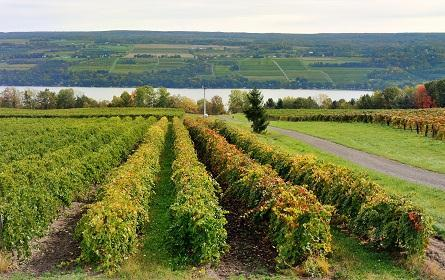
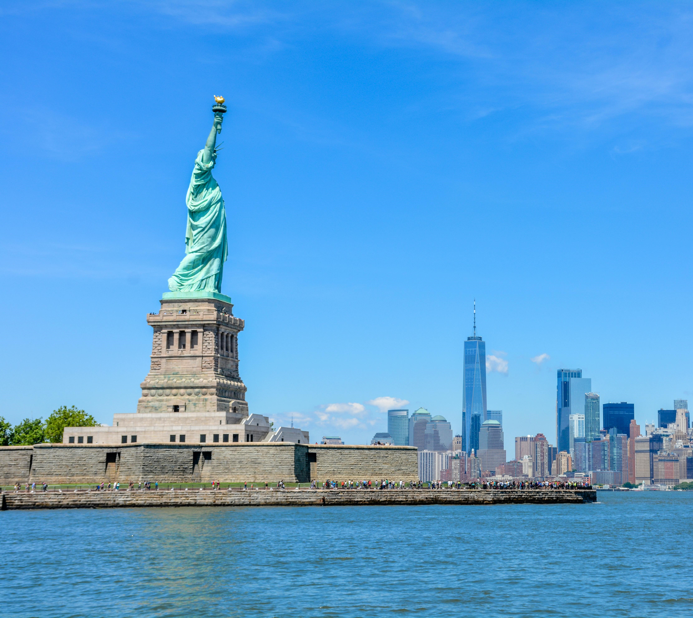

New York state captivates both domestic and international travelers with the most populated city in the United States, sprawling state parks and a few beach communities. Whether you want to visit New York City to see Times Square and go ice skating at Rockefeller Center, or retreat to the mountains of upstate New York, there are plenty of one-of-a-kind vacation spots in the Empire State. U.S. News considered sights, culture, adventurous pursuits and the opinions of experts and readers to compile this ranking of the best places to visit in New York state. Read on for vacation inspiration, and don't forget to vote below for the destinations you think belong on this list.
Best New York Attractions
Niagara Falls

New York City

Adirondack Mountains

the Finger Lakes
Statue of Liberty
Brooklyn Bridge